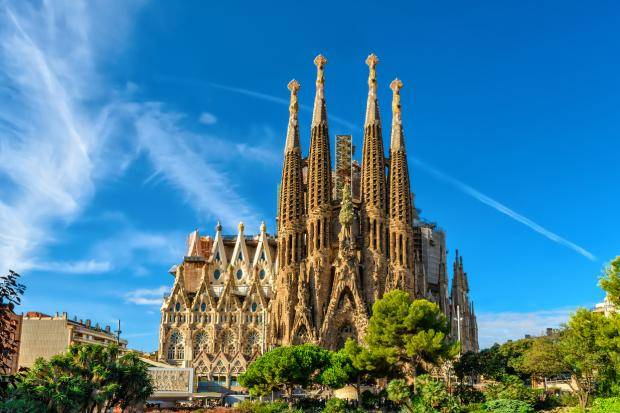

Barcelona is Spain's second largest city, in population, with around 3,200,000 people. This innovative, diverse city is located on the northeast coast of the peninsula along the Mediterranean Sea. Barcelona is the capital of the Catalonian region, as well as the province of Barcelona. Although Spanish is the official language in Spain, in the Catalonian region, Catalan is also recognized as the co-official language.
For more information about the city visit https://en.wikipedia.org/wiki/Barcelona